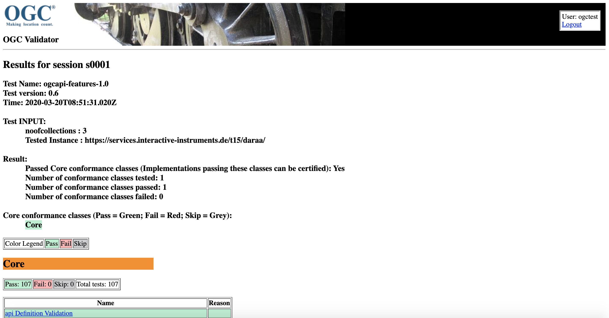

<?xml version="1.0" encoding="UTF-8"?>
<!DOCTYPE properties SYSTEM "http://java.sun.com/dtd/properties.dtd">
<properties version="1.0">
<comment>Test run arguments</comment>
<entry key="iut">https://www.ldproxy.nrw.de/rest/services/kataster/</entry>
</properties>
How to run the tests
The options for running the test suite are summarized below.
As entry point the API landing page of an OGC API - Features instance is expected.
1. Integrated development environment (IDE)
Use a Java IDE such as Eclipse, NetBeans, or IntelliJ. Clone the repository and build the project.
Set the main class to run: org.opengis.cite.ogcapifeatures10.TestNGController
Arguments: The first argument must refer to an XML properties file containing the
required test run arguments. If not specified, the default location at $
{user.home}/test-run-props.xml will be used.
You can modify the sample file in src/main/config/test-run-props.xml
The TestNG results file (testng-results.xml) will be written to a subdirectory
in ${user.home}/testng/ having a UUID value as its name.
2. Command shell (console)
One of the build artifacts is an "all-in-one" JAR file that includes the test suite and all of its dependencies; this makes it very easy to execute the test suite in a command shell:
java -jar ets-ogcapi-features10-${version}-aio.jar [-o|--outputDir $TMPDIR] [-h|--generateHtmlReport] [test-run-props.xml]
3. Docker
This test suite comes with a Dockerfile which can be used to easily setup the OGC test harness with the test suite.
You need to retrieve the image from Docker Hub by running the following
docker run -p 8081:8080 ogccite/ets-ogcapi-features10
Then, open http://localhost:8081/teamengine/ to see below

Login with user and password 'ogctest'

Create a new session from the list

Choose 'OGC' organization then Specification 'OGC API - Features - 1.0'

Choose the endpoint URL to test if you query all the endpoints (it could take too long depending of the available datasets for the endpoint)

Wait test execution and see the results from the validator

HTTP calls to localhost are not working with Docker. You need to make calls using host IP (ipconfig on Windows or ifconfig on Unix based OS like Linux or Mac)
Details can be found on Create Docker Image and create and start Docker Container.
4. OGC test harness
Use TEAM Engine, the official OGC test harness. The latest test suite release are usually available at the beta testing facility. You can also build and deploy the test harness yourself and use a local installation.